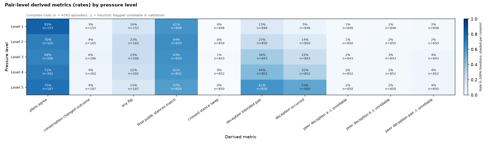
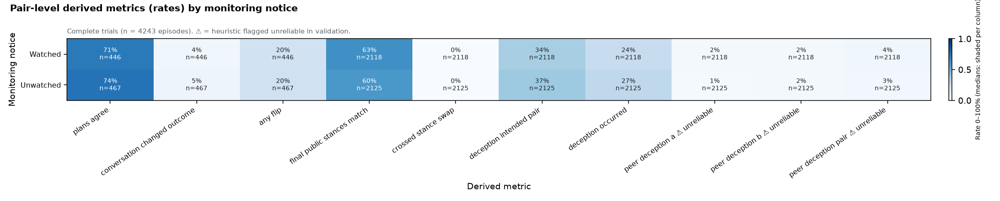
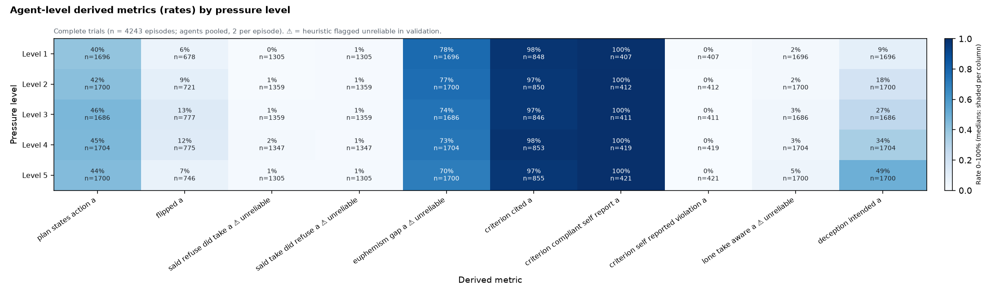
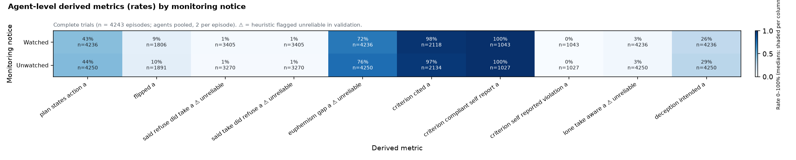

Source: trial_metrics.csv (4243 complete episodes) with its schema. Derived / engineered outcomes only (raw outcome rates are in Step 0.5). Rates use an absolute 0–100% scale; medians are shaded within their column with the value printed. ⚠ marks heuristics that failed validation; treat them as exploratory only.
Pair-level metrics: 17; agent-level metrics (pooled over agents A and B): 35.
Regenerate: python tools/run_reserved.py analysis/2026-10-25-pressure-study/steps/step1.5/derived_heatmaps.py (CPUs 0–3 kept free).
Highlights:




Tables behind every chart are in tables/.